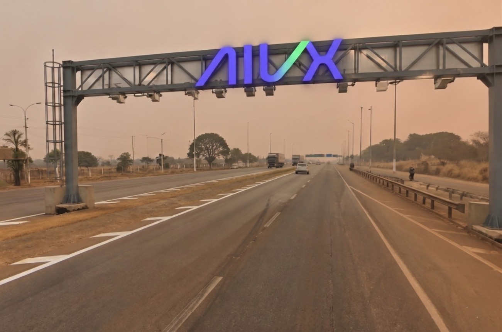
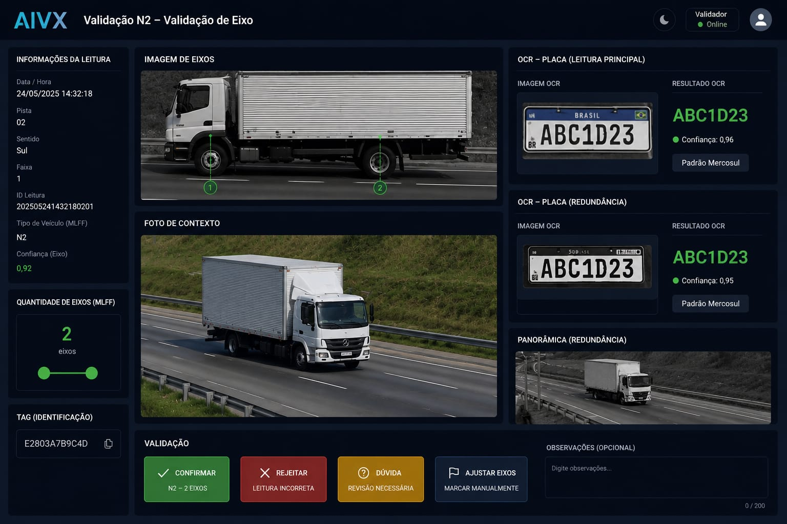
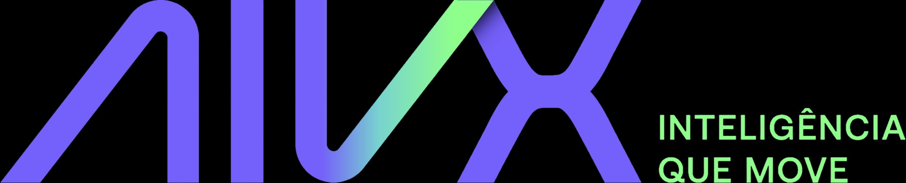

Arquitetura aberta. Identificação precisa. Receita protegida.
Feito aqui, para o tráfego daqui.
Quem Somos
A AIVX é uma empresa focada em tecnologia e inovação, desenvolvendo soluções inteligentes que impulsionam eficiência e transformação digital, com foco em rodovias, mobilidade urbana e infraestrutura de alto impacto.
Por que Free Flow
A Lei 14.157/2021 tornou o MLFF obrigatório em novos contratos. Um novo ciclo de rodovias digitais está em andamento.
Comparativo operacional
| Característica | Praça Conv. | MLFF |
|---|---|---|
| Infraestrutura | Cabines + barreiras | Pórtico com sensores |
| Velocidade | Parada/redução | Velocidade de cruzeiro |
| Pagamento | No ato na cabine | TAG ou placa + app |
| Segurança | Risco de colisões | Fluxo contínuo |
| Capacidade | Limitada por cabines | Ilimitada (rodovia) |
| Impacto CO₂ | ↑ Para e arranca | ↓ Emissões |
Como chegamos ao mercado
Na AIVX, rodovia é infraestrutura crítica.
Rodovia inteligente é o nosso DNA.
Construímos uma plataforma de Free Flow desenhada do zero para a realidade brasileira. Não importada, não adaptada.
A Solução
API-first, multi-vendor, LIDAR 360° e redundância distribuída, desenvolvida para a realidade do tráfego brasileiro.

Representação ilustrativa da arquitetura de pórtico
Estrutura Física
Hardware posicionado estrategicamente para cobertura total de faixas, sem ponto cego, com redundância integrada na própria estrutura.
Como Funciona
Na Prática
Identificação em tempo real, múltiplas faixas, alta velocidade.
Interface de Validação
Todas as evidências de um trânsito em uma única tela: imagem de eixos, OCR, redundância, TAG e classificação. Validação com total rastreabilidade.


Diferenciais Competitivos
Custo que faz sentido. Alta performance. Receita que não escapa.
Impacto de Negócio
A próxima geração de tecnologia já existe. Aberta. Precisa. Pronta pra escalar com você.
Feito aqui, para o tráfego daqui.
AIVX TECNOLOGIA · MULTI LANE FREE FLOW PLATFORM